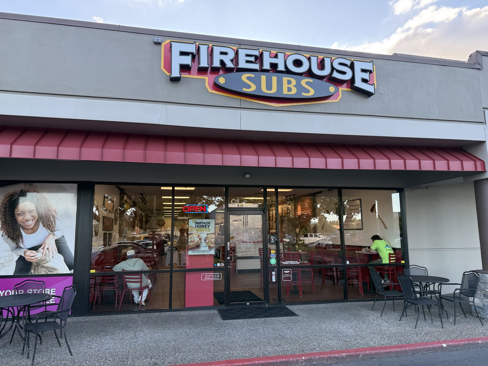
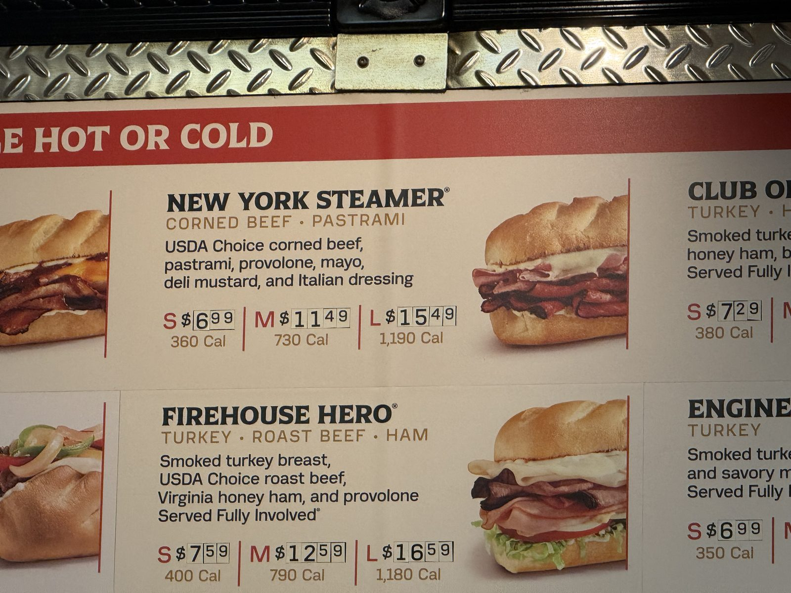
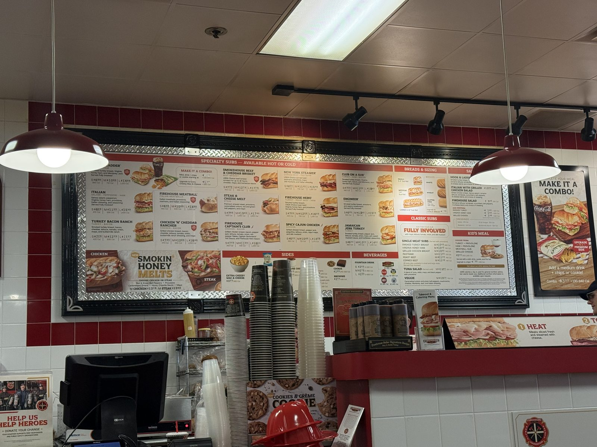
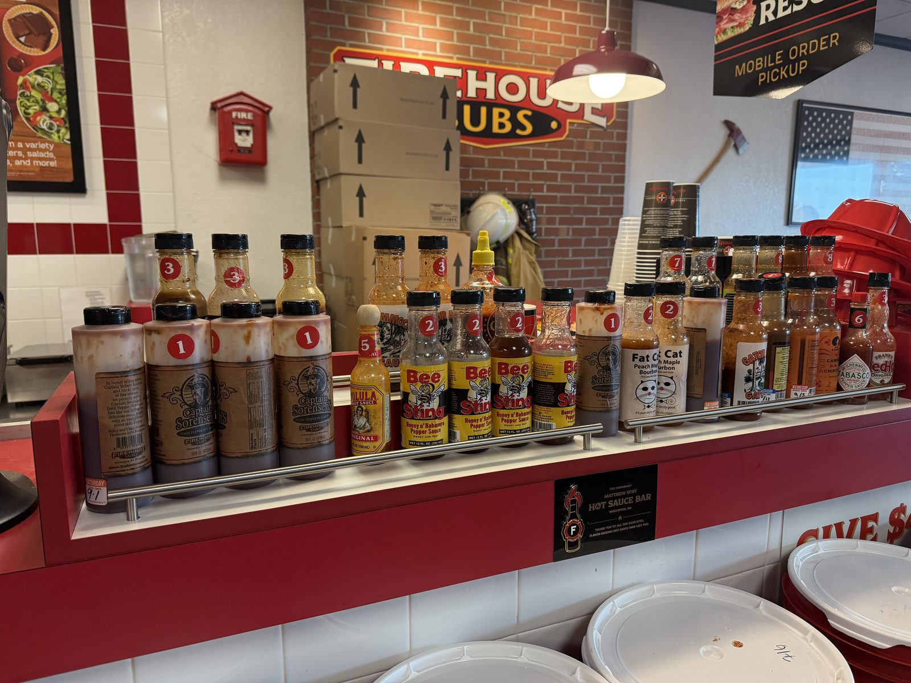
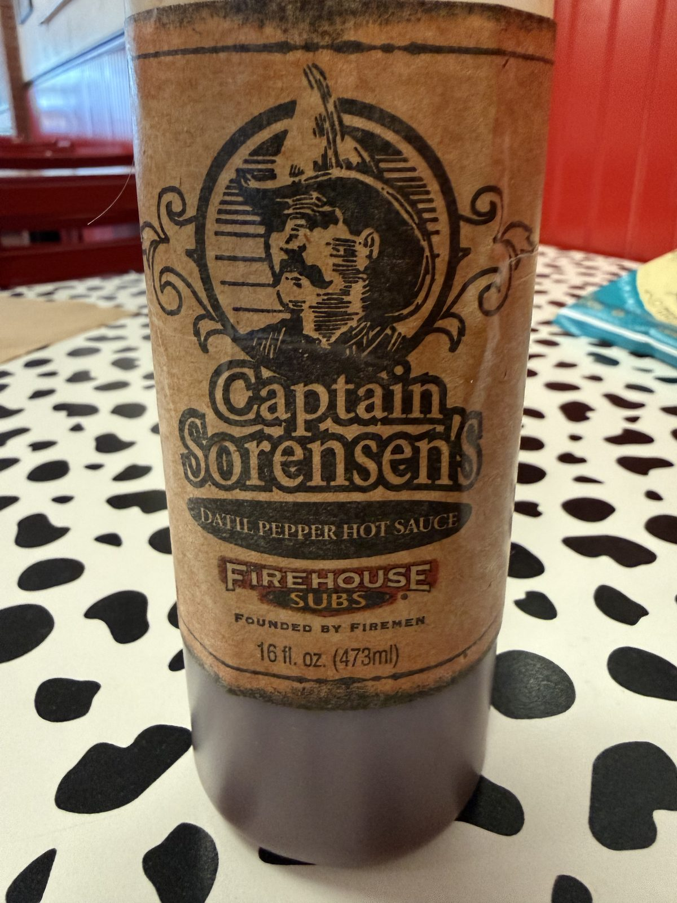
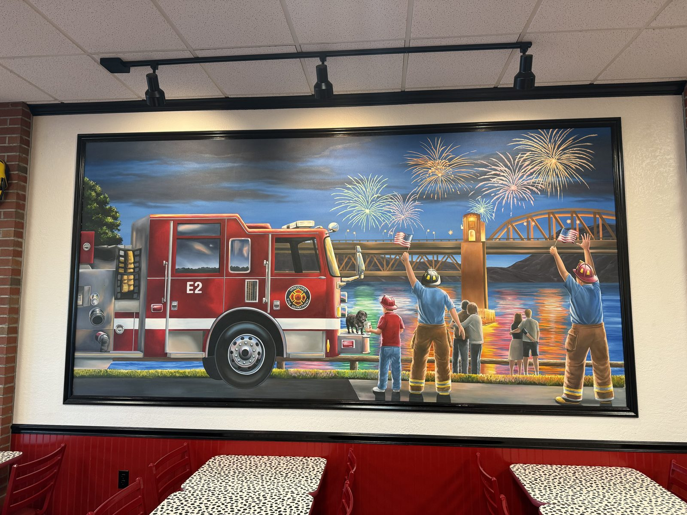

Fully Involved, at Firehouse Subs

Dinner last night was a New York Steamer at Firehouse Subs in Vancouver, Washington, which is the kind of sentence that requires no further explanation to anyone who already orders this way and a little explanation to everyone else. Corned beef and pastrami, warm, under melted provolone, with mayo, deli mustard and Italian dressing on a roll that's spent its required few seconds getting toasted. It is, by the menu board's own count, the chain's flagship — front and center on the specialty subs panel, trademarked name and all, sitting between the Smokehouse Beef & Cheddar Brisket and the Club on a Sub like it knows it's the one people actually came in for.

The trick: order it "fully involved"
Here's the part I actually do every time, and the reason this entry exists. Several of Firehouse's specialty subs — the Hook & Ladder, the Italian, the Firehouse Hero — come standard "Served Fully Involved," which on their board just means lettuce, tomato, onion and deli mustard stacked in. The New York Steamer isn't one of them. Its own printed description stops at the meat, the cheese and the two condiments — no produce, nothing green, nothing crisp. So I ask for it fully involved anyway, and the counter adds the lettuce, tomato and onion without blinking, because apparently a corned beef and pastrami melt wants exactly what a Reuben would never think to ask for. It turns an already-good sandwich into a better one — the cold crunch of the vegetables cutting through all that warm, salty meat and melted cheese is doing real work — and it's not on the board for this sandwich, so if you don't ask, you don't get it.

And yes, before anyone else says it: I know exactly where that phrase comes from, and I think it's one of the better pieces of restaurant branding I've run into. "Fully involved" is fire-service language for a structure fire that has spread through an entire room or building — every part of it burning at once, nothing left to hold back. Handing that phrase to a sandwich topping option, on a menu already decorated with a fire hydrant, an axe on the wall and a definition card for the Hook & Ladder sub explaining what an actual hook and ladder truck is, is exactly the kind of consistent, doesn't-try-too- hard theming that a lot of chains reach for and few actually land. Firehouse Subs lands it, on the menu and on the walls, without it ever feeling like a gimmick layered on after the fact — because with this one, it wasn't.
Captain Sorensen's, and why the sauce bar has a name
Every Firehouse location I've been to has a hot sauce bar — a little chrome rail of bottles labeled 1 through 8-or-so by heat, most of them small-batch brands I don't recognize (Bee Sting, Fat Cat, the various Gator lines). But the house sauce, sitting at a modest "1" on the heat scale and refilled more often than anything else on the rail, is Captain Sorensen's Datil Pepper Hot Sauce — and the label itself tells you why it's there. Firehouse Subs was founded by brothers Robin and Chris Sorensen, sons of a career firefighter, Captain Robert Sorensen, and the sauce is styled after their father's own recipe. The bottle says as much in its own printed dedication: proudly served "in honor of our father Captain Robert Sorensen and his 42 years of fire service," made "just like our father's delicious sauce, paired with an unexpected sweet side." It's a mild, tangy, faintly sweet datil-pepper sauce — nothing that competes with the actual eight-or-nine-alarm bottles further down the rail — and it's the one worth trying first specifically because the story behind it is the whole point of the chain's name.


That "founded by firemen" tag turns out to be doing more work than most restaurant taglines. The public-safety angle isn't decoration either: there was a sign posted right at the register showing a check for $1,490,600, made out that same month to Washington public safety organizations from the chain's Public Safety Foundation, funded in part by round-up-your-change donations at the counter. Whatever you think of a fast-casual chain's marketing in general, it's hard to argue this one isn't earned — it's the same thing I found with In-N-Out a couple of days ago, a chain where the story printed on the packaging turns out to be true.

One honest complaint: the app
None of the above is a coupon. Firehouse runs the usual rotation of app-only deals and points, and I would love to tell you the fully-involved New York Steamer got cheaper last night because of one of them. It did not, because the app would not cooperate — codes that don't apply at checkout, a rewards balance that doesn't match what's on the receipt, the general low-grade friction of a loyalty program that feels bolted onto a POS system rather than built with it. Great branding, genuinely good sandwich, and an app that makes you work for a discount it advertised five minutes earlier. Order at the counter if you can; treat anything the app promises as a rumor until it actually rings up.
Is the New York Steamer worth ordering "fully involved"?
Firehouse Subs — 8101 NE Parkway Dr, Suite C-1, Vancouver, WA 98662. 📍 Get directions
Hours: 10:00 AM – 9:00 PM daily.
What it costs: New York Steamer $6.99 (small) / $11.49 (medium) / $15.49 (large), off the board photographed above.
Worth knowing: ask for it "fully involved" even though the board won't remind you to — it isn't standard on this sandwich, but the counter will add it without blinking.